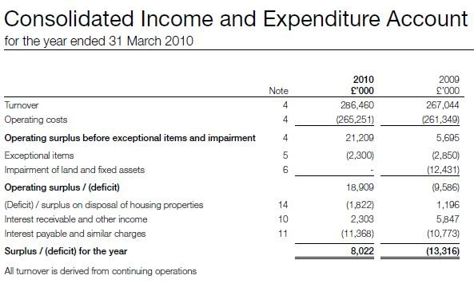

Housing Associations#
Housing Associations that are registered charities follow a different SORP to other charities - the rules for Registered Social Landlords (regulated by the Housing Corporation).
In these reports there will be no "Statement of Financial Activities" instead they report a "Consolidated Income and Expenditure Account".
The total income and expenditure reported to the charity commission should in theory be Turnover plus any other positive adjustments, and expenditure should be Operating costs plus any negative adjustments, although this may not always be the case.
Example below: The Anchor Trust

The National Housing Federation supplies some data for the Almanac about income and expenditure so we do not need to collect further data.
For Housing Associations, data entry should skip the data entry, flag it has a Housing Association and skip data entry without sending an issue to NCVO.
Note
This only applies if it is really a Housing Association, and not in every instance where an income and expenditure account is included instead of a SOFA.
Some of these will be obvious from the name - e.g they will often be called Acme Housing Trust, but the best way to tell is probably that there will also be a Registered Social Landlord No. next to the Charity Registered number on the title sheet.